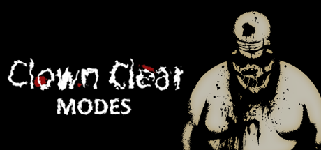

News & Dev | April 2, 2023 (8:00 PM EST)
Game Modes Galore

Welcome to part two of the epic Clown Clear content blog trilogy, if you haven’t read the one on “Combat”, you can do so here: In-Tents Combat.
Today we’re talking about three of the game modes I’ve been working on: Campaign, Survival, and-one I have yet to mention-Build. Additionally, I’ll also talk a bit about difficulties and the Modifier feature.
Campaign Mode
Campaigns are the main method of playing Clown Clear, they contain multiple levels called “chapters”, and follow each of the six characters. Players will face hordes of the infected, while collecting a multitude of different items and weapons as they progress through the various “chapters”.
Survival Mode
Survival mode forces players to test their skills and endurance, facing endless waves of enemies with the primary goal of surviving as long as possible. The player begins with limited resources and an indefinite intermission period, giving them ample time to prepare before starting the match.
Build Mode
And finally - Build mode. This intense new game mode is a variant of Survival with a twist. In Build mode, players must construct, repair, or otherwise prepare different escape vehicles to win, all while holding back the horde.
Likewise, players will also build their own supplies & weapons, which will take a varying amount of time depending on the quality or type.
Difficulties
Like most games, each game mode will feature a few different difficulties to appeal to different skill levels (or just offer a challenge). More may be added later on, and some of the names might be changed, but as of now those featured are: Easy, Normal, Hard, and Insane.
These are pretty self explanatory, but they will affect things like the rarity of certain items, the health / damage of the clowns, and the rate at which hordes will spawn
Modifiers
Modifiers were briefly discussed in the “Modder Fodder” blog a while back, but I thought it’d be relevant to bring it up here as well. As previously mentioned, this is still just a concept and might not make it into the release.
The plan is for a list of developer & community made modifiers (almost like mini-gamemodes) to be used alongside existing game modes, changing up gameplay in a ton of different ways. Want the player to have 1% health at all times, with no healing item spawns? Want all common clowns to inflict fire damage on their hits? Want to be 10 ft. tall and incapable of squeezing through the safehouse doors? You can do it all! Or all at once, assuming it isn’t too much of a hassle to add.
A flexible, easy to use creation menu is also planned, allowing anyone to create and upload their own from the comfort of the main menu. No file-rummaging necessary.
Conclusion
That’s about it for now, thank you all for reading part two of the Clown Clear content blog trilogy, and stay tuned for the final part, where I’ll discuss some of the game’s different maps and campaigns.